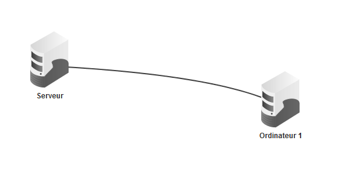
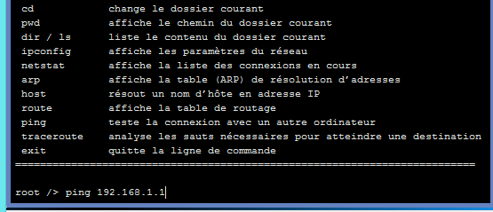
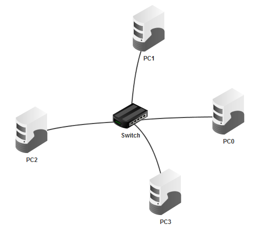
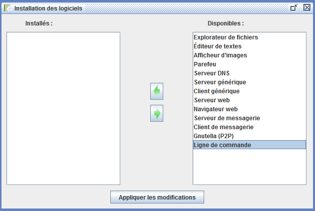
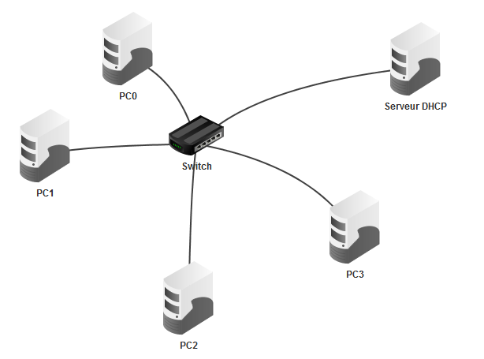
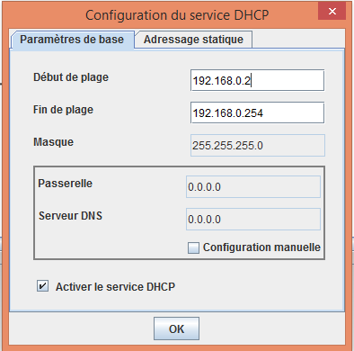
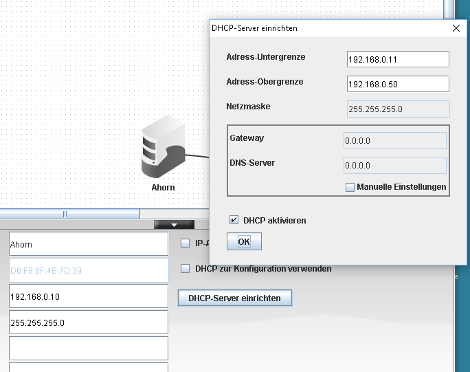

Construire un petit réseau informatique
Cette séance permet de construire, tester et faire évoluer un petit réseau dans un simulateur pour comprendre concrètement ce que sont l’adresse IP, l’adresse MAC, le paquet de données et le serveur DHCP.
Tester les principes du réseau
Cette activité vise à faire comprendre le fonctionnement d’un réseau local par un exemple concret : deux ordinateurs, un switch, un serveur DHCP et la circulation des paquets.
On observe comment un ordinateur retrouve un autre ordinateur, comment la donnée circule, et pourquoi un serveur DHCP permet d’automatiser la configuration des machines.
Visionnez la vidéo ci-dessous (durée : 8 min 51 s) afin de prendre rapidement en main le logiciel Filius. Vous découvrirez les deux modes de fonctionnement du logiciel : le mode conception, qui permet de placer les différents éléments du réseau (ordinateurs, commutateurs, routeurs, etc.), et le mode simulation, qui permet d'étudier la communication entre les ordinateurs du réseau, notamment l'échange des paquets de données.
Supports et organisation
- Logiciel Filius installé ou accessible en amont de la séance.
- Lexique fourni aux élèves : adresse IP, adresse MAC, paquet, switch, DHCP.
- Fiche réponse complétée au fil des questions guidées.
- Travail individuel ou en binôme, avec une démarche d’autonomie guidée.
Les différentes phases de la séance
Mise en situation et prise en main : contextualisation rapide de la question « comment un ordinateur trouve-t-il un autre ordinateur sur un réseau ? » puis découverte de l’interface Filius.
- Glisser un ordinateur, un switch et un câble.
- Connaître les mots-clés de base du réseau.
Réseau à deux machines et premier ping : on construit un petit réseau minimal et on observe la circulation d’un paquet.
- Placer deux ordinateurs et les configurer avec une adresse IP et un masque donnés.
- Relier les machines au câble et lancer une commande ping.
- Observer les paquets envoyés, reçus et perdus.


Passage à l’échelle avec un switch : on construit un réseau de quatre postes reliés au même switch pour comprendre la diffusion locale des données.
- Tester la communication entre plusieurs postes.
- Comprendre le rôle du switch.
- Comparer avec un hub plus ancien.


Automatiser la configuration des machines
Le problème de la configuration manuelle d’une grande quantité d’ordinateurs pose une question : comment automatiser l’attribution des adresses IP ?
En ajoutant un serveur DHCP, les postes reçoivent automatiquement une adresse, ce qui simplifie grandement la gestion d’un réseau.


Mots clés donnés aux élèves
- Adresse IP : numéro qui identifie un ordinateur sur un réseau.
- Adresse MAC : identifiant unique et fixe d’une carte réseau.
- Paquet : petit morceau de données envoyé sur le réseau.
- Switch : appareil qui dirige les paquets vers le bon destinataire.
- Hub : appareil plus ancien qui renvoie les paquets à tous les postes connectés.
- Serveur DHCP : machine qui attribue automatiquement les adresses IP du réseau.
Ce que l’on doit retenir
Une adresse IP permet d’identifier un ordinateur sur un réseau, les paquets transportent les données et le switch aide à les acheminer correctement. Le serveur DHCP automatise la configuration, ce que l’on utilise aujourd’hui dans les réseaux domestiques et scolaires.
